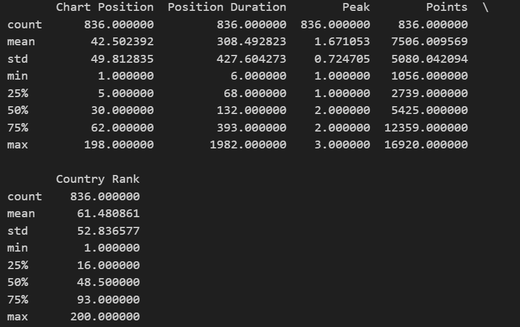

Begin by thoroughly understanding the dataset and the problem you are trying to solve. Familiarize yourself with the characteristics of each feature, including their data types (numerical, categorical), potential relationships, and relevance to the project’s objectives.
My collected data is meant to display major representative sources of American pop culture. This currently includes headlines from newpapers, top music songs internationally, and the most liked Netflix shows from the past year. As these sources are known to reflect what the general population is interested in, these datasets that seemingly represent America’s favored pasttimes, also present current wave of cultural influence in America. Of these influences, I aim to see how certain streaming services are most influential on the colloquialisms of America.
Descriptive Statistics
Calculate and report basic summary statistics such as mean, median, mode, standard deviation, and variance for numerical variables. For categorical variables, provide frequency distributions and bar charts to visualize data distribution.
Apple:
Code
import requestsimport jsonimport reimport pandas as pdimport numpy as npprint(appledf.describe())newAppledf = appledf.drop(["Artist and Title", "Country"], axis=1)newAppledf = newAppledf.reset_index(drop=True)print(newAppledf.describe())

Apple Analysis Summary Statistics
Netflix:
Code
import requestsimport jsonimport reimport pandas as pdimport numpy as npprint(netflixdf.describe())
Netflix Summary Statistics
News API:
Code
import requestsimport jsonimport reimport pandas as pdimport numpy as npprint(df_new.describe())print(df_newer.describe())print(df_newest.describe())
Data Visualizations
Create visualizations such as histograms, box plots, scatter plots, and heatmaps to explore the data’s distribution, relationships between variables, and potential patterns or trends. Visualizations can make complex data more interpretable.
Correlation Analysis
Examine the correlations between variables using correlation matrices, heat-maps, or scatter plots. Identify which variables are positively, negatively, or not correlated, which can guide further analysis.
Apple:
Code
import requestsimport jsonimport reimport pandas as pdimport numpy as npprint(appledf.corr())
Netflix:
Code
import requestsimport jsonimport reimport pandas as pdimport numpy as npprint(netflixdf.corr())
News API:
Code
import requestsimport jsonimport reimport pandas as pdimport numpy as npprint(df_new.corr())print(df_newer.corr())print(df_newest.corr())
Hypothesis Generation
Refined Hypotheis and Questions:
Examples of American pop culture colloquialisms? OR Example of adopted pop culture colloquialisms?
What regions in the United States have more of an effect on shared national colloquialisms?
What regions globally have more of an effect on shared national colloquialisms (limited to seven continents)?
Is there a specific genre that is more influential on imported jargon?
Is there a specific region who is more impressionable to imported jargon?
Based on the data collected, would media or music streaming services be more influential on imported jargon?
Is national language relation to english influential on how adaptable the terms are?
Does positive or negative content have more of an effect on adapted jargon?
Practical applications for encouraging international colloquialisms dispersal?
How can these applications adapt to the growth of international colloquialisms in America?
Hypothesis: I believe the rise of international content being consumed through streaming platforms and the rise in the incorporation of internationally- influenced colloquialisms in America will yield a positive correlation.
Data Grouping and Segmentation
If applicable, group or segment the data based on relevant criteria to uncover insights within specific subgroups.
Identifying Outliers
Detect and investigate outliers that may indicate data quality issues or reveal interesting anomalies in the dataset.
Methods and Findings
Summarize the key findings, insights, and patterns discovered during the EDA phase. Present these findings in a clear and organized manner, using textual narration, tables, charts, and narrative descriptions.
Tools and Software
I will be primarily using Python for exploratory data analysis. This is due to the simplicity of the language making it easier for viewers to follow along with my data manipulation and the complexity of complementary sources, such as its libraries and frameworks. The libraries I am using include Pandas, Matplotlib, Seaborn, Numpy, scikit- learn, and BernoulliNB. While I am using Pandas to sort and manipulate my data, I will be using Matplotlib and Seaborn to visualize any relations I would like to highlight a few of the many possibly influential streaming platform factors on American colloquialism. I will be using Numpy to produce statistical information of my datasets that support my stance and visualizations. In addition to utilizing scikit- learn for producing general algorithms, I will implement BernoulliNB to generate my Naive Bayes algortihm.